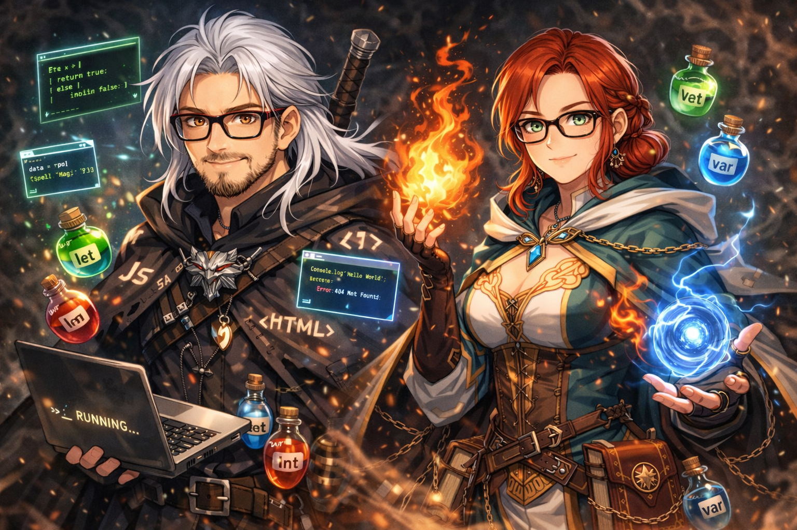

Prólogo — As Runas da Lógica
Muito antes dos reinos humanos existirem, os antigos magos do continente descobriram algo extraordinário: A própria realidade era governada por Runas da Lógica. Essas runas não eram magia comum. Elas funcionavam como instruções, capazes de controlar artefatos, abrir portais, invocar energia e até manter criaturas aprisionadas. Mas com o passar dos séculos, o conhecimento dessas runas foi se perdendo. Agora, fenômenos estranhos começaram a acontecer: cofres mágicos pararam de responder portais se abriram no lugar errado monstros surgiram perto de vilas A Ordem de Oxenhall acredita que alguém — ou algo — está corrompendo as runas. Para investigar, eles enviaram aprendizes pelo continente. Você é um deles.
PRÓXIMO